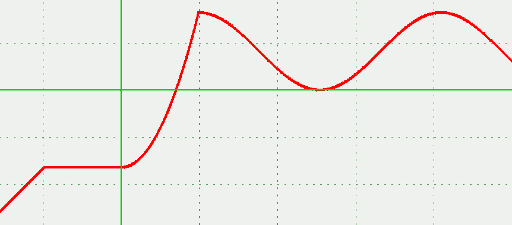

Descripción
Selecciona el valor que se encuentra en el intervalo especificado por un valor dado.
Nota: los valores posteriores al caso seleccionado no se evaluarán.
Esta función permite definir fácilmente funciones definidas a trozos
Cadena de entrada
seccion
Cadena de salida
seccion
Uso
seccion(<valor_selector>,<extremo>[,<valor>,<extremo>]+[,<caso_else>])
| Parámetros | |||
|---|---|---|---|
| # | Parámetro | Descripción | Valor por defecto |
| 1 | valor_selector | Valor que determina el intervalo especificado (real) | |
| 2+2i | extremo | Extremo inferior o superior (real) del intervalo seleccionado por el valor selector.
El primer extremo inferior es inclusivo, los demás exclusivos. Los superiores son inclusivos |
|
| 3+2j | valor | Valor devuelto si el intervalo es seleccionado | |
| 5+2(n-1) | caso_else | Valor devuelto si ningún intervalo es seleccionado. Si no se especifica, se lanzará una excepción | ∅ |
| i∈[0..n],j∈[0..n-1], n:=nº de intervalos | |||
Ejemplos
seccion(7.5,0,[0],prev(5),[1],prev(7),[2],prev(9),[3],prev(10),[4])
VectorEvaluado: [2]
seccion(10,0,[0],prev(5),[1],prev(7),[2],prev(9),[3],prev(10),[4])
VectorEvaluado: [4]
seccion(20,0,[0],prev(5),[1],prev(7),[2],prev(9),[3],prev(10))
FuncionException: <<<FuncionException>>> en funcion "seccion": Caso por defecto no establecido --> seccion(Vector:[20,0,[0],prev(5),[1],prev(7),[2],prev(9),[3],prev(10)])
función definida a trozos:
seccion(x,-inf,x,-2,-2,0,sqr(x)-2,2,1+cos(x-2),4pi+2,2)
Salida JGE:
Véase también…